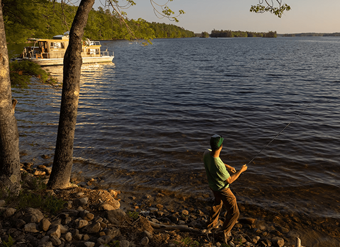

NATIONAL GEOGRAPHIC
Cooking oil just fueled a transatlantic flight. But is it a solution or a distraction
ENVIRONMENT
The first commercial transatlantic flight using 100 percent Sustainable Aviation Fuel (SAF), made from used cooking oil, recently flew from London’s Heathrow airport to New York’s JFK airport—a project called Flight100. But while some hope this could be a step forward for sustainability, many have criticized Flight100’s green claims.
Globally, aviation made up around 2.5 percent of the world’s carbon emissions in 2022, and in the next 20 years, reports suggest those emissions will triple as more people and goods fly around the world.
Flights powered by electricity and hydrogen have traditionally been seen as more sustainable forms of air travel, but the nascent technology is still decades away from being used. Virgin, which operated the flight, claimed in a press release that SAF is currently the only viable way to sustainably power long-haul flights.
What exactly is Sustainable Aviation Fuel?
Definitions for SAF vary, but the term generally refers to a type of aviation fuel that’s not produced by fossil fuels and has a smaller carbon footprint over its lifecycle as a result.
How SAF is produced can influence just how sustainable it is, but studies show some forms of SAF can reduce the emissions of a fossil-fuelled powered jet by more than 90 percent.
“In other words, it still has some CO2 emitted,” says Mohamed Pourkashanian, head of University Energy Research at University of Sheffield, who was involved in Flight100.
Flight100 was powered mainly by used cooking oil, currently the only SAF being produced at a commercial scale. This type of fuel is made from vegetable oils and animal fats rather than fossil fuels but powers an engine similarly to conventional oil, says Joshua Heyne, director of Washington State University’s Bioproducts, Sciences, and Engineering Lab. The oil is collected from a variety of sources, including McDonald’s restaurants.
Current regulations from ASTM International a global standards organization allow commercial aircraft to use up to 50 percent SAF mixed with traditional jet fuel, but Flight100 received a permit to use 100 percent SAF. Regulators reviewed technical elements ahead of the journey, and the flight itself proved long-haul planes can fly safely using 100 percent SAF.
“Governments, policymakers, and aviation stakeholders can no longer say we’re a long way away from the technology. The technology is there,” he says. But it will still be years before these flights are rolled out across commercial fleets because of the amount of fuel needed. Currently, SAF makes up less than one percent of the global jet fuel supply.
One criticism of SAF is that the land used to grow the crops used for fuel should be used to produce food crops instead. Developing more land for biofuels like SAF could result in the loss of important carbon stores, such as forests and peatlands, or habitats for endangered wildlife.
“Straws are such a small percentage of all of the single-use plastic that we’re using,” she says. “For companies, banning them became something they could do to appease the masses. They got rid of straws but didn’t tackle the rest of the supply chain plastic that we’re creating.”
“Any crop grown for fuel competes with foodstuffs and pushes the agricultural frontier further into forests and peatlands, with large releases of carbon,” writes Gareth Dale, a political economist at Brunel University in London, and Josh Moos, a political scientist at Leeds Beckett University for The Conversation.
While new SAFs repurpose used cooking oil that might otherwise go to waste, Dale and Moos argue that even massive collection efforts would be insufficient for the large volume of jet fuel needed to power the thousands of flights taking off every day.
When it comes to used cooking oil, Heyne acknowledges that “there's only so much of that type of oil in the world, and there's even less of it that can be sourced sustainably,” but highlights that SAF can be made from other types of waste such as alcohol, municipal solid waste, and sewage sludge.
“Everything you flush down the toilet or throw away in the trash, if there’s carbon in it, it can be turned into SAF,” he says.
Comments :
- john Very good
- john Very good
Leave a Reply
Your email address will not be published. Required fields are marked*
Related posts:
-
 What's it like to travel on the longest daily running train service in the US
What's it like to travel on the longest daily running train service in the USI’m sitting in the observation car on Amtrak’s California Zephyr, a train that trundles cross-country for 2,438 miles, making it the longest daily-running rail service in the US. From its starting point near San Francisco to its final destination in Chicago
View article -
 Maine's mountains and lakes offer space to pause and wonder
Maine's mountains and lakes offer space to pause and wonderFor some people, the mention of Maine evokes sea breezes and vacations at one of its many beautiful beaches. For others, visions of weathered cottages, charming towns, and maritime history come to mind.
View article -
Fireflies and lighthouses A tour of Maine’s MidCoast
There's something about the light in Maine. During the day, sunshine reflects off crisp blue waters, casts angles across tidy seaside cottages, and illuminates curious creatures in tide pools.
View article